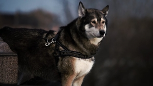

10 ćwiczeń, które powinien wykonać każdy opiekun psa, aby zapewnić mu bezstresową wizytę w salonie pielęgnacji psów

Wszystkie ćwiczenia
powinny być dla psa przyjemne i komfortowe, mają na celu przyzwyczajenie psa do wszelkich manipulacji i znoszenia
ich zupełnie spokojnie. Podstawą jest zaufanie psa do człowieka. Jeśli w którymś momencie pies wykazuje niepokój
lub zdenerwowanie, postaraj się rozłożyć ćwiczenia na drobne elementy, nagradzając smakołykami spokojne zachowanie.
Nie wolno na siłę przytrzymywać wyrywającego się psa, gdyż to wzmaga jego lęk, który niekiedy może spowodować
agresywne zachowanie, trudne do wyeliminowania. Najlepiej pracować już z małym szczeniakiem, który zwykle
dość łatwo akceptuje podnoszenie, przewracanie i dotykanie różnych części ciała. Nie przeprowadzaj ćwiczeń,
gdy pies jest rozbawiony, podekscytowany, wykorzystaj chwile uspokojenia i odpoczynku. Ruchy człowieka powinny
być spokojne i opanowane, można mówić do psa łagodnym głosem.

- UNIERUCHOMIENIE
Przytrzymaj psa przez chwilę, tak, żeby nie mógł odejść ani zmienić pozycji. - WYSTAWIANIE NA STÓŁ
Podnieś psa i postaw na stole, głaszcz przez chwilę, możesz nagradzać za spokojne stanie, po czym zdejmij go ze stołu. Nie pozwól, aby pies sam zeskoczył. To samo można powtarzać wstawiając psa do wanny lub brodzika. - LEŻENIE NA BOKU
To ćwiczenie można wykonywać na dwa sposoby: nauczyć psa spokojnie akceptować przewracanie na bok, albo kłaść się na boku na komendę. Leżący na boku pies powinien spokojnie pozwolić się przytrzymać i dotykać. - ZĘBY
Delikatnie otwórz pysk psa i dotykaj, zębów, dziąseł, języka uważając by jednocześnie nie zasłaniać psu oczu. - OCZY
Przytrzymując delikatnie głowę psa odchyl dolną i górną powiekę, ewentualnie przemyj okolice oczu preparatem do pielęgnacji oczu. - USZY
Regularnie masuj uszy i jeśli jest taka potrzeba usuń nagromadzony brud miękkim wacikiem nasączonym płynem do przemywania uszu. - ŁAPY
Podnoś, przytrzymuj i masuj każdą łapę, dotykaj opuszków i skóry pomiędzy palcami. - BRZUCH
Podczas gdy pies leży na boku lub na grzebiecie, masuj brzuch i klatkę piersiową. - DOTYK OBCEJ OSOBY
Wykorzystuj nadarzające się okazje, aby osoby nie znane psu głaskały go i dotykały. Jeśli pies jest przy tym zupełnie rozluźniony, przeprowadzaj z obcymi wszystkie powyższe ćwiczenia. - PRZYZWYCZAJANIE DO SZCZOTKI
Systematycznie przyzwyczajaj psa do czesania szczotką lub grzebieniem. Wybieraj czas, gdy pies jest spokojny i nagradzaj smakołykami spokojne zachowanie.